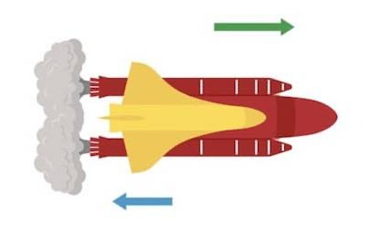

La Conquista dello Spazio
Il Razzo e il Principio di Azione e Reazione
Il terzo principio della dinamica ha permesso la conquista dello spazio, grazie al motore a razzo. Questo motore sfrutta la reazione dei gas espulsi per generare spinta. Il razzo immagazzina combustibile e comburente per una combustione interna, che fa uscire gas ad alta velocità verso il basso, creando una spinta verso l'alto. La forza di propulsione diretta verso il basso permette al razzo di vincere la forza di gravità e decollare.
